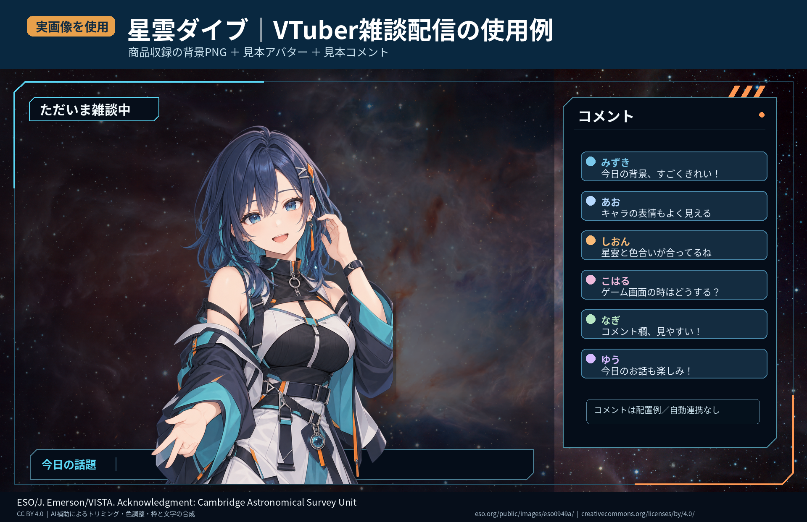
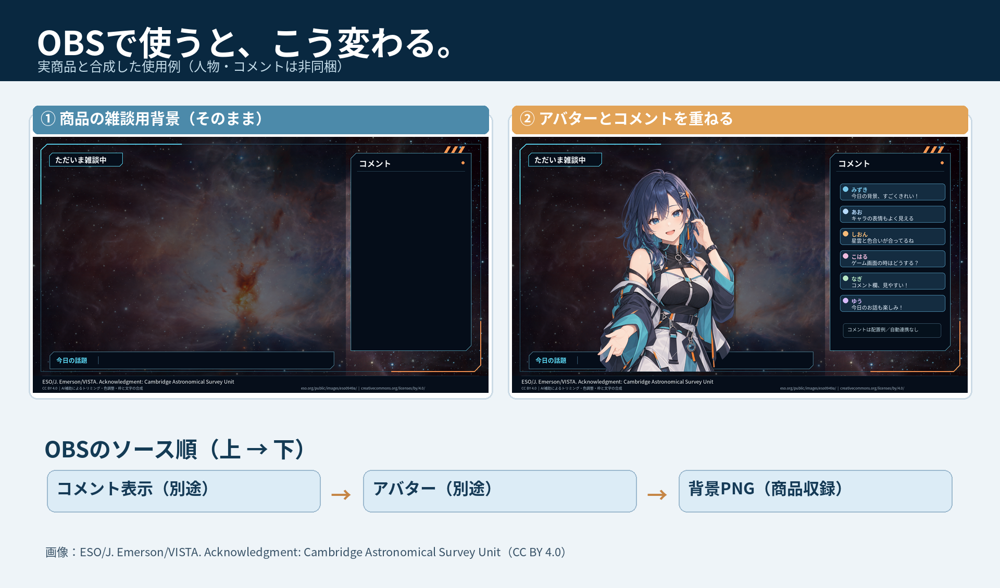

実際の商品背景で組み立てた使用例
ここでは 「星雲ダイブ」商品本体に収録されている雑談背景PNG を、そのまま使っています。人物とコメントだけは非収録の合成見本です。商品にはアバターモデルやコメントの自動取得機能は含まれません。


まずは4ステップ
OBSの「シーン」欄で＋を選び、「雑談」などの名前を付けます。
「ソース」欄の＋ →「画像」→ 使うPNGを選択。表示サイズは「編集」→「変換」から調整します。
アバターや立ち絵、コメント表示を別ソースにして、背景より上へ配置します。
作例A：雑談・朝活配信
※これは位置を示す説明用の模式図です。販売商品のスクリーンショット・収録物ではありません。
OBS「ソース」のおすすめ順（上→下）
- 3. コメント表示
- 2. アバター／立ち絵
- 1. 背景PNG（最下層）
画像の上に人物が乗る状態ならOK。人物の顔とコメント枠が重ならないように、まずは中央から少しずらして配置します。
コメント取得サービスやLive2Dソフトは、このガイドの対象外です。ご利用環境の表示ソースを使ってください。
作例B：ゲーム配信
※汎用の配置模式図。実際の有料背景やゲーム映像、アバターは表示していません。
ソースの重なりに注意
- 4. コメント・アバター（上層）
- 3. 必要なら透過オーバーレイ
- 2. ゲームキャプチャ
- 1. 背景画像（最下層）
ゲーム映像の上に不透明の背景画像を置くとゲームが隠れます。透過オーバーレイが付属している素材の場合だけ、その透明部分を利用してください。
どの素材・差分が付属するかは各商品ページで確認してください。ここでは汎用的なOBSの表示順を示しています。
困りがちな3点の確認表
| 困ったこと | 最初に確認すること |
|---|---|
| 立ち絵が背景の後ろに隠れた | OBSのソース一覧で、立ち絵が背景より上にあるか |
| 背景が画面からはみ出す | 背景とOBSキャンバスの縦横比を確認し、変換の「画面に合わせる」等を試す |
| 無料サンプルは使えたが有料版が必要か迷う | 背景の用途、同梱内容、素材・差分・利用条件を商品ページで比較する |
まず無料版で、あなたの画面に置いてみる
配信背景は、色合いだけでなく、アバターを置いた後に顔が見やすいか、コメントを読めるかが大切です。無料サンプルを実際に配置して、普段使う画面サイズで試してください。気に入った場合のみ、商品ページの有料版の内容をご確認ください。
星雲ダイブ 配信画面セット：無料見本・本体はこちら ↗商品価格、配布形式、許諾範囲はリンク先の最新表記を優先してください。購入は不要です。独立した広告や第三者推薦ではなく、Yohaku Library自身の案内です。
公式ヘルプ（操作の根拠）
OBS Sources Guide：ソースの重ね順と変換／OBS Image Sources：PNGを使う画像ソース／OBS Quick Start Guide：録画での動作確認
記事更新：2026年10月19日。OBSのバージョンやUI言語によって表示名が異なる場合があります。本文は実用手順と模式図であり、特定の商品でOBS操作を改めて実機検証したという報告ではありません。